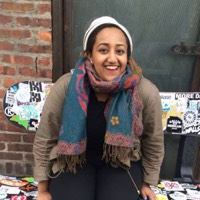

100Reporters
15 people whose festival biography mentions 100Reporters. A mention can mean a job, a past job, a grant, a broadcast or an award: read the bio for which.


 Theodore FrankPanelist, festival team, workshop leader · 7 editions, 2017–2025Arnold & Porter Kaye Scholer (retired partner)
Theodore FrankPanelist, festival team, workshop leader · 7 editions, 2017–2025Arnold & Porter Kaye Scholer (retired partner)

- Mariana BritoFestival team · 2 editions, 2015–2016
 Karan BalajiFestival team · 2022
Karan BalajiFestival team · 2022
Lewam DejenFestival team · 2015- Douglas GillisonPanelist · 2015
 Lori E. GoldFestival team · 2015
Lori E. GoldFestival team · 2015- Sally HaydenPanelist · 2019
 Linda JuePanelist · 2021
Linda JuePanelist · 2021 Drew WilliamsFestival team · 2015
Drew WilliamsFestival team · 2015